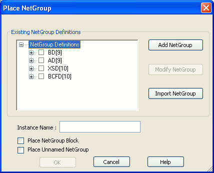
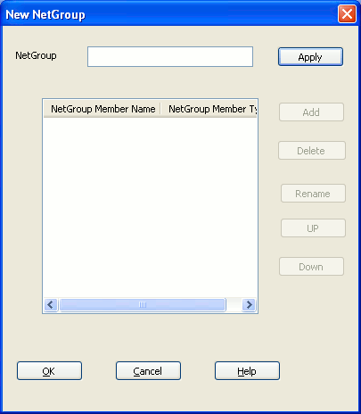
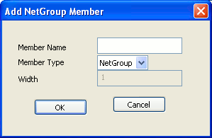
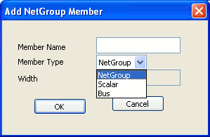
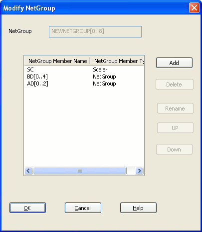

When you create a named NetGroup, you need to specify the associated NetGroup definition and then specify a name for the NetGroup. This type of NetGroup is persistent and can be instantiated across a design. The NetGroup can also be exported as a library and then instantiated and used in other designs. However, if you need to create a NetGroup for one-time use, you create an unnamed NetGroup. For details on unnamed NetGroups, see Unnamed NetGroup.
To create a named NetGroup
-
Choose NetGroup from the Place menu in Capture.
The Place / Create NetGroup dialog displays.
You use this dialog box to build associated NetGroup definitions that you can use anywhere in your design.
 -
To specify a new associated NetGroup definition, click
the Add NetGroup button.
The New NetGroup dialog displays.
 - In the NetGroup Name text box, enter the name of the NetGroup and click Apply.
-
To add a new NetGroup member, click the Add button.
Note:The Add button is disabled until you specify the NetGroup name and click Apply.
The Add NetGroup Member dialog displays.

You can add NetGroups, buses or scalars as members of a NetGroup.

If you add a NetGroup or a bus, you need to also specify the width of the member. For example, if you add a NetGroup named AD that contains five signals, you will specify the name as AD[0..4] or AD[0-9]. The same holds true for buses.
When you add a bus or a NetGroup as a member of a NetGroup definition, you need to specify the bus or NetGroup member using the normenclature [LSB..MSB]. The least significant byte followed by the most significant byte.
If you add a NetGroup as a member to a NetGroup, the new NetGroup is also available for use as a NetGroup on its own. So in the Place NetGroup dialog, you will see the new associated NetGroup definition.
In the New NetGroup dialog, you can also rename or delete existing NetGroup memebrs. You can also move the existing memebrs up and down.
You move the positions of the members of a NetGroup, up or down to specify the horizontal position they will display in when you place the NetGroup on a page.
To rename a NetGroup member
- In the New NetGroup or Modify NetGroup dialog, select the NetGroup member to rename.
-
Click the Rename button.
The Rename NetGroup Member dialog displays. - Type a new name for the member and click OK.
When you rename a NetGroup member that is either a NetGroup or a bus, you need to ensure that you only change the name of the member. This implies, in the rename procedure, you cannot change the width of the member.
When you rename a NetGroup member that is a NetGroup, you need to rename the NetGroup to the name of an existing NetGroup not already contained within the current NetGroup.
To modify a named associated NetGroup definition
- To open the NetGroup dialog, choose NetGroup from the Place menu.
-
Click the check-mark next to the NetGroup you want to
modify and click the Modify button.
Note: You need to click the check-mark next to the name of the NetGroup. Selecting the NetGroup name will not make the NetGroup available for edit.

When you modify an associated NetGroup definition, you can add, delete or rename members. You can also move the positions of the existing members up and down. However, you cannot change the name of the member.
To delete a named NetGroup
- Choose NetGroup from the Place menu in Capture.
- In the Place NetGroup dialog, choose the NetGroup to delete.
- Click Delete NetGroup.
|
|
|
Copy and paste NetGroups across designs
You can use the Capture Copy and Paste commands to copy a
NetGroup from one design to another. This functionality is
the same as for other schematic page objects.
When you copy a NetGroup to another design, the associated
NetGroup definition is also copied. This means that if you
open the NetGroup dialog, you will see the associated
NetGroup definitions now available for use in the new
design.
Also, if you copy and paste a NetGroup into another design
and NetGroups of the same name exist in the destination
NetGroup, the NetGroups in the destination design will not
be overwritten.
Exporting and Importing Associated NetGroup Definitions
You can export the NetGroups defined in a design to an associated NetGroup definition xml file. These NetGroups can then be imported and used in any other design.
To export an Associated NetGroup to a Definition Xml
- From the Place menu choose NetGroup
- Open the NetGroup dialog
- Click Export NetGroup.
- In the Save As dialog, specify the name and destination of the NetGroup definition xml.
When you run the Export NetGroup command in Capture, all the named NetGroups in the current design are exported to the definition xml.
This implies the unnamed NetGroup definitions are not exported.
To import an Associated NetGroup Definition Xml
- From the Place menu choose NetGroup.
- Open the NetGroup dialog.
-
Click Import NetGroup.
The Associated NetGroup Definitions xml files dialog box displays. -
Enter the full path of the associated NetGroup definition
xml file or browse to and select the associated NetGroup
definition xml file and click Open.
The NetGroups contained in the file are imported into the current design.
Placing a named NetGroup on a page
After you define a NetGroup, you can place the NetGroup on
the page of the design.
You can place a named NetGroup on a page as:
- a block
- a hierarchical port
- an off-page connector
To place a named NetGroup as a block
-
To place a NetGroup as a block you need to go to the
NetGroup dialog box. This box is open if you have just
created a new associated NetGroup definition or you can
open this from the NetGroup menu item on the Place
menu.
When placing a NetGroup on a page, you have the option to place the entire NetGroup or place only selected members of the NetGroup. -
To place the entire NetGroup on the page, click the check
box to the left of the NetGroup name.
(To place only selected members of the NetGroup, expand the NetGroup node and click the check boxes to the left of the selected members.)
Notice, when you click the NetGroup name check box or any one of the NetGroup member check boxes, the Name field is filled with the name of the NetGroup. This is the default name given to the named NetGroup instance, and you have the option to edit this instance name. -
To place the NetGroup as a block, choose the Place
NetGroup Block check box and click OK.
The cursor changes to a crosshair icon. - Draw a block to contain the NetGroup. This is done the same way as when drawing a hierarchical block on a page.
When you place a NetGroup as a block on a schematic page, you have the option to synchronize this block (up or down) the same way you synchronize a hierarchical block in a design. For details about synchronizing a block, see .
To place a named NetGroup as a hierarchical port
-
To place a named NetGroup as a hierarchical port, you
need to go to the Place Hierarchical Port dialog.
To open this dialog, choose the Hierarchical Port menu item from the Place menu. - Enter a symbol for the port.
- To place the hierarchical port as a NetGroup port, choose the NetGroup Port check box.
- From the drop-down list, choose the NetGroup.
- Click OK and place the port on the page.
The look and feel of a NetGroup port is different from that of a hierarchical port.
Also, if you place the cursor over the NetGroup port, the tooltip displays the associated NetGroup definition.
To place a named NetGroup as an off-page connector
-
To place a named NetGroup as an off-page connector, you
need go to the Place Off-Page Connector dialog box.
To open this dialog box, choose the Off-Page Connector menu item from the Place menu. - Enter a symbol for the connector.
- To place the off-page connector a NetGroup connector, choose the NetGroup Port check box.
- From the drop-down list choose the NetGroup.
- Click OK and place the connector on the page.
The look and feel of a NetGroup connector is different from an off-page connector.
Also, if you place the cursor over the NetGroup connector, the tooltip displays the associated NetGroup definition.
To add or remove pins from a netgroup
- Select the NetGroup on the design.
- Choose Add/Remove Pins on NetGroup Block from the pop-up menu.
- Select the pins to add or remove selection from pins that you want to remove.
-
Click OK.
You can click to add the pins.
To assign a NetGroup to a bus
-
Choose Place - Net Alias.
The Place Net Alias dialog box appears. - In the Alias field, specify a name for the alias.
- Select NetGroup Aware Aliases.
- Select a NetGroup from the list. You can also edit to specify a new NetGroup name.
-
Click OK.
The alias has the same width as the specified NetGroup. - Click on a Bus in the design to assign the NetGroup.